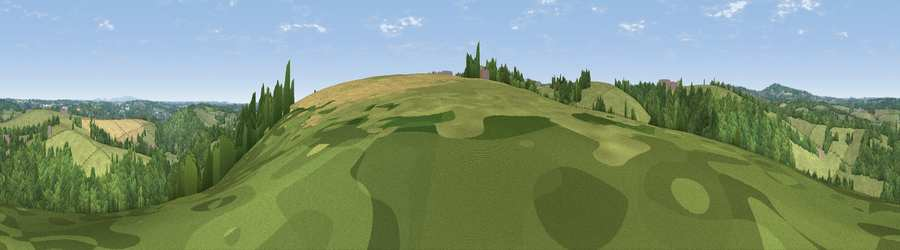

Viewpoint near Ponsanooth
#33521 in England · top 72% of its area beats it · near Ponsanooth · access?Where it is
The exact computed spot (SW 75575 37425). Click the marker for map links.
Public access: no public right of way or access land is recorded at this exact spot — it may be on private land. Computed from Natural England's CRoW access layer and OpenStreetMap rights of way — not the legal definitive map. Always verify locally.
The view, rendered

A 360° render of this exact spot computed from the terrain model, tree cover and land cover — summer colours, afternoon light, calibrated against photographs of famous viewpoints. Real trees, hedges and buildings will differ in detail.
The panorama
Grey silhouette: terrain skyline in each direction (720 bearings, Earth curvature and refraction included). Dashed green: skyline with trees (+15 m) and buildings (+8 m) as obstacles. Blue strip: how far the ground is visible on each bearing.
Where the view opens
Wedge length = distance to the farthest visible ground on that bearing (vegetation-aware). Rings at 10, 25 and 50 km.
What fills the view
47% woodland · 42% grassland · 9% cropland · 2% built-up
Angular shares of the visible panorama (visual magnitude), not map area. Landscape diversity 0.44 (0–1 Shannon).
Key numbers
More beautiful places nearby
The staircase of upgrades: each row has a higher view potential than everything closer. Driving times are estimates from straight-line distance, calibrated against real road routing — check an actual route before setting out.
| Place | Direction | Drive | Score |
|---|---|---|---|
| Pellynwartha Hill | NNE · 1 km | ~4 min | 36.0 |
| Viewpoint near Tremough | S · 2 km | ~6 min | 62.3 |
| Viewpoint near Mabe Burnthouse | S · 4 km | ~8 min | 71.9 |
| Viewpoint near Lanner | NW · 5 km | ~11 min | 74.5 |
| Carn Brea | WNW · 8 km | ~16 min | 81.1 |
| St Agnes Beacon | NNW · 14 km | ~25 min | 86.1 |
| Rosewall Hill | W · 27 km | ~43 min | 88.0 |
| Viewpoint near Combe Martin | NE · 139 km | ~162 min | 88.9 |
50.19422, -5.14572 · source: screening · position refined by local search. Computed location — check access rights before visiting.